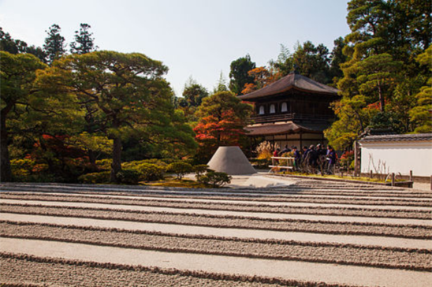

Chemin des philosophes
Parfait pour une balade tranquille, le Chemin des philosophes suit un petit canal bordé de cerisiers, reliant plusieurs temples zen dans un quartier paisible de Kyoto. Très apprécié au printemps pour ses fleurs de cerisiers, c’est un itinéraire qui mêle nature, méditation et patrimoine culturel. L’itinéraire est plat et agréable, idéal pour se ressourcer à l’écart des foules.
Période : Printemps
Durée : 3-4 heures
Quartier : Nord-Est de Kyoto
Tags


Un sentier piéton longeant un canal clair, bordé de centaines de cerisiers. Il tient son nom du philosophe Nishida Kitarō, qui l’empruntait chaque jour pour méditer.
📷 Sublime entre fin mars et mi-avril – prévoir appareil photo !
📷 Sublime entre fin mars et mi-avril – prévoir appareil photo !
Grand complexe zen avec plusieurs sous-temples, des jardins, et un aqueduc de style occidental. L’ambiance y est solennelle, parfaite pour finir la promenade en beauté.
🧘 Possibilité de méditation ou simplement de flânerie silencieuse dans les jardins.
🧘 Possibilité de méditation ou simplement de flânerie silencieuse dans les jardins.
🏯 Ginkaku-ji (Pavillon d’argent)
Un temple emblématique au charme sobre, connu pour son jardin sec, sa mousse verdoyante et ses allées méditatives. Même si l’intérieur est payant, la façade extérieure et le quartier valent le détour.
🐶 Les chiens ne sont pas admis à l’intérieur, mais on peut se promener aux abords.
🐶 Les chiens ne sont pas admis à l’intérieur, mais on peut se promener aux abords.
🛕 Hōnen-in (optionnel)
Petit temple paisible, souvent moins fréquenté, entouré de mousse et de nature. L'entrée est libre et gratuite. On y trouve régulièrement des expositions d’art ou des messages spirituels.
🌿 Un lieu discret et inspirant pour faire une pause au calme.
🌿 Un lieu discret et inspirant pour faire une pause au calme.